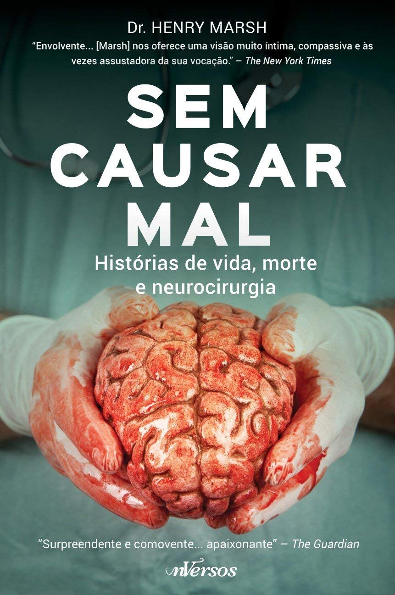

Estes são os meus livros favoritos, qual você daria like?

No campo da neurocirurgia, mais do que em qualquer outro ramo da medicina, o juramento hipocrático de “nunca causar mal a ninguém” carrega uma amarga ironia — o livro oblitera qualquer noção que considere a neurocirurgia um ofício sofisticado praticado por médicos frios. Com compaixão e candura impressionantes, Dr. Marsh revela sua felicidade ardente em operar, os triunfos comoventes, os devastadores desastres, os arrependimentos amargos e momentos de humor negro que caracterizam a vida de um neurocirurgião.
A verdade nua e crua é o que você pode esperar em O SEGREDO DOS CORPOS. Escrito a quatro mãos, duas delas no bisturi do Dr. Vincent Di Maio e as outras duas do veterano escritor Ron Franscell, parceiro de Vincent Bugliosi (autor de Helter Skelter), o livro revela surpresas a cada página. Conheça a história da medicina legal, as curiosidades de uma profissão que aparenta ser tão mórbida e sombria, e as razões que levam alguém a dedicar toda sua vida a pesquisar os mortos. Ler O SEGREDO DOS CORPOS é como estar dentro do necrotério, participando de uma verdadeira aula sobre patologia criminal. Sem o inconveniente cheiro do formol.
O livro de Caitlin levanta a cortina preta que nos separa dos bastidores dos funerais e nos faz refletir sobre a vida e a morte de maneira inteligente, honesta e despretensiosa – exatamente como deve ser. Como a autora ressalta na nota que abre o livro, “a ignorância não é uma bênção, é apenas uma forma profunda de terror”.